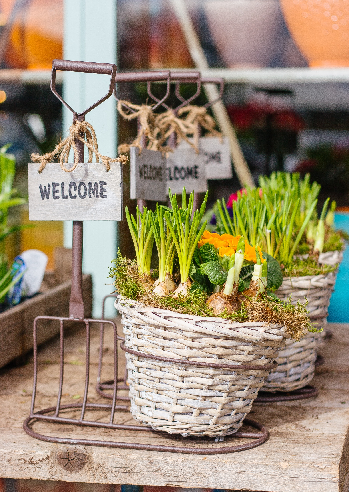

One-One_One Coaching
We can provide one-on-one coaching to help you wherever you are on your health journy. We can help you:
- Establish a whole-food / plant-based lifestyle.
- Grocery shop effectively.
- Meal plan and prep.
- Address specific health issues with food and nutrition (with support from your physician).
- Individualized support.
Meal Planning
Let us develop weekly meal plans based on your and your family's preferences. We can even shop for and prep your ingredients.
Group Classes
Join a group class and learn with others!
Meal Prep Events
Come to our kitchen where we will provide the ingredients and instructions for preparing a week's worth of ready-to-cook meal kits. Or invite us to your kitchen for a private event with your friends!
